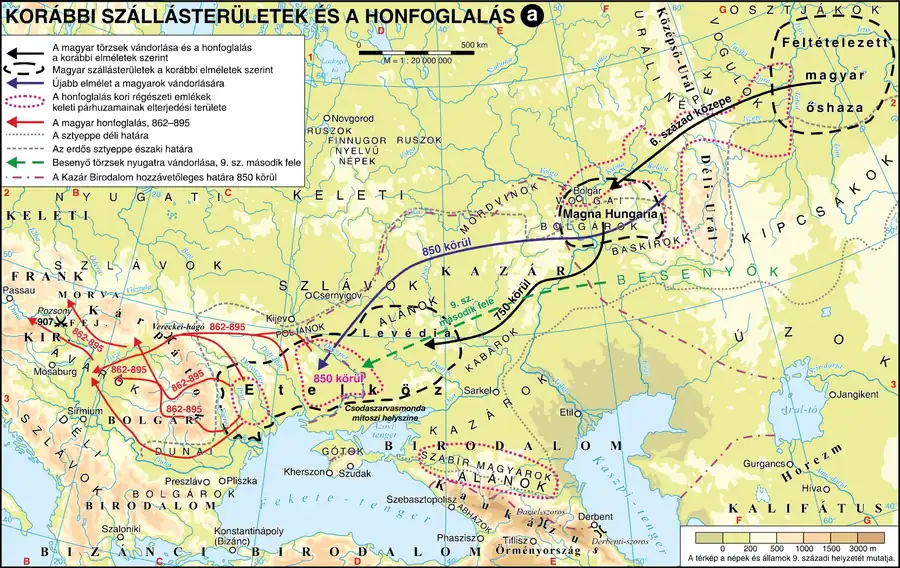
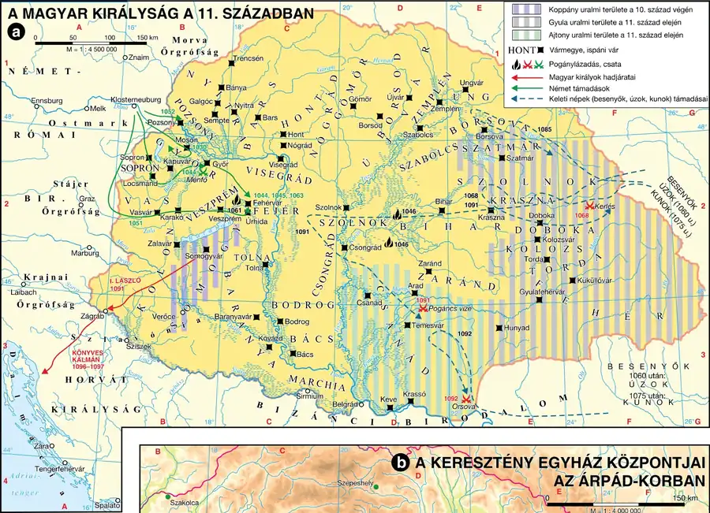

A magyar őstörténet — a vándorlás évezredei
Ismered az őstörténet-kutatás forrásait és nehézségeit, be tudod mutatni a finnugor elmélet szerinti vándorlás fő állomásait, és tudod, miért folyik ma is vita a magyarság eredetéről.
Az őstörténet-kutatás forrásai és nehézségei
A magyar őstörténet-kutatás legnagyobb nehézsége az egykorú írásos források hiánya. Az eredethagyományból értékes elemeket őriztek meg középkori krónikásaink: a csodaszarvasmonda (eredetmítosz), a turulmonda (az uralkodóház eredete), a vérszerződés (a sztyeppeállam megalapítása) és a fehér ló mondája (a honfoglalás). E mondák párhuzamai a sztyeppei — szkíta, hun, törökségi — népek felé mutatnak. A magyarokról idegen szerzők (muszlim földrajzi írók, bizánci császárok, latinul író nyugat-európai krónikások) is sok adatot megőriztek, de csak a külső szemlélő nézőpontjából.
Mivel az írott adatok száma korlátozott, az őstörténet-kutatásban kiemelt szerepe van más tudományoknak is: a nyelvészet a nyelv történeti fejlődését vázolja fel, és nyelvcsaládokba sorolja a népeket; a néprajz- és népzenekutatás a szellemi kultúra hagyatékát vizsgálja; a régészet a tárgyi hagyatékot tárja fel (elsősorban temetők feltárásával); az embertan és a történeti genetika pedig a csontokból von le következtetéseket. Fontos korlát, hogy egy régészeti kultúrához több nép is tartozhatott, és a nyelv története nem feltétlenül azonos a nép őstörténetével.
A finnugor elmélet szerinti vándorlás
A finnugor elmélet a magyarok őshazáját az Ural-hegység és az Ob folyó menti erdős-mocsaras vidékre helyezi. Innen indult a halász-vadász életmódot folytató finnugor népek szétvándorlása. A vándorlás állomásait a nyelvcsaládfa-elmélet alapján lehet rekonstruálni:
| Korszak | Terület | Jellemző |
|---|---|---|
| Urali kor | Ural-hegység, Nyugat-Szibéria | halászó-vadászó-madarászó életmód |
| Finnugor kor | az Ural két oldala | halászó-vadászó-madarászó életmód, anyajogú társadalom |
| Ugor kor | az Ural keleti oldala | az éghajlat felmelegedése nyomán megkezdődik a földművelés és az állattenyésztés |
| Sztyeppei vándorlás | az eurázsiai sztyeppövezet | nagyállattartó nomadizálás; törökös jellegű hadviselés, viselet, kultúra (rovásírás) |
Kr. e. 1300 körül felmelegedett, majd Kr. e. 800 körül lehűlt az éghajlat: az ellehetetlenülő mezőgazdasági termelés miatt a magyarok a füves pusztákra indultak, és ezzel kiváltak az ugor közösségből. Innentől — a Kr. e. 500 és Kr. u. 500 közötti időszakban — nagyállattartó nomád életmódot folytattak az eurázsiai sztyeppövezetben.
A vita a magyarság eredetéről
Őstörténetünk alapkérdéseiben (nyelvrokonság, az őshaza helye) folyamatos tudományos vita zajlik, amelyet — ahogy a tankönyv is jelzi — politikai felhangok is színeztek és színeznek: ez elsősorban a finnugor vagy török származás kérdése körül forog. A magyarság sok más néphez hasonlóan többgyökerű: a magyarokra használt népelnevezések, az eredethagyomány és a népzenekincs párhuzamai a sztyeppei törökségi népekhez vezetnek, míg a nyelvet a XIX. század második felében felállított nyelvcsaládfa-elmélet a finnugor nyelvcsaládba sorolja. A kettő nem zárja ki egymást: a nép és a nyelv története a sztyeppén nem feltétlenül fut párhuzamosan.
A vizsgán gyakran csapdát jelent, ha valaki a finnugor és a török eredetet egymást kizáró elméletként mutatja be. A helyes válasz: a nyelv finnugor eredetű, míg a harcmodor, a viselet és a kultúra jelentős része törökös jellegű — ez a kettősség a sztyeppei népek kialakulásának általános sajátossága, nem magyar különlegesség.
Kötelező adatok
| Fogalmak | Topográfia |
|---|---|
| nyelvcsalád, finnugor elmélet, sztyeppei vándorlás, rovásírás | Ural-hegység, Ob folyó, eurázsiai sztyeppövezet |
1. forrás
A magyarokat különböző korokban és helyeken élt szerzők különféle néven említik: van, aki hunnak, van, aki avarnak, onogurnak vagy baskírnak nevezi őket. Ez azzal magyarázható, hogy az egyes írók nem mindig ugyanazt a magyarságot látták, hanem csak azokat a népcsoportokat, amelyekből a magyarság végül összeállt. A magyar eredethagyományt a hazai krónikások is csak később, latinul jegyezték le, ezért ők is az idegen népnévhasználathoz igazodtak.
- Milyen okra vezeti vissza a forrás azt, hogy a magyarokat sokféle néven említik a korabeli szerzők?
- Miért nehezíti ez a sokféleség az őstörténet-kutatást?
- Mit jelent az, hogy a magyar krónikások „az idegen népnévhasználathoz igazodtak”? Milyen nyelven írtak?
Ellenőrző feladatok
Levédiától Etelközig — a fejedelemség kialakulása
Be tudod mutatni a magyar törzsek kazár kapcsolatát, a hét törzs és a kabarok szövetségét, valamint a vérszerződés és Álmos fejedelemsége körülményeit és jelentőségét.
Levédia és a kazár kapcsolat
A magyarok első névről ismert kelet-európai szállásterületét — Bíborbanszületett Konstantin bizánci császár műve alapján — Levédiának nevezzük; a Don és a Dnyeper folyók vidékére tehető (kb. VII–IX. század). Itt a magyarok szoros kapcsolatba kerültek a térség legerősebb hatalmával, a Kazár Birodalommal — egyes vélemények szerint ez a kapcsolat magyarázhatja a később kialakuló kettős fejedelemség rendszerét is. ELevédiában érhette a magyar törzseket besenyő támadás, aminek hatására a népesség szétvált: egy csoport Perzsia vidékére, egy másik a Volga–Káma vidékére (a későbbi Magna Hungariába), egy harmadik pedig nyugatra, Etelköz földjére vándorolt.
Etelköz és a vérszerződés
Etelköz (Folyóköz) a Don és a Duna közötti síkvidék — a magyarsággal kapcsolatba hozható régészeti leletek alapján szűkebb értelemben a Dnyeper és a Dnyeszter folyók vidékét jelölhette. Itt, Etelközben zajlott le a magyar történelem egyik legfontosabb eseménye: a hét magyar törzs (Nyék, Megyer, Kürtgyarmat, Tarján, Jenő, Kér, Keszi) vezetői vérszerződést kötöttek — ez a szkíták óta ismert sztyeppei szokás volt. A hagyomány szerinti hét vezér: Álmos, Előd, Ond, Kond, Tas, Huba és Töhötöm (Tétény).
A vérszerződés minden bizonnyal nem egészen önkéntesen, hanem Álmos katonai erejének hatására jött létre, és megerősítette Álmos egyszemélyi vezető szerepét. Mivel a vérszerződés után olyan erős állami egységbe tömörültek az etelközi magyarok, hogy a törzsek önálló politikai tényezőkké soha nem váltak, a tankönyv szerint nem is érdemes „törzsszövetségről” beszélni — mivel Álmos utódait, Árpádot és dédunokáját, Gézát is „nagyfejedelemnek” nevezték a külföldi források, helyesebb Magyar Nagyfejedelemségről beszélni. Etelközi tartózkodásuk idején csatlakoztak a magyarokhoz a kazároktól elpártolt kabarok (nyolcadik törzsként), akik segédhadként harcoltak, támadáskor elöl, visszavonuláskor hátul.
Kerüld a „magyar törzsszövetség” kifejezést Etelköz utáni időszakra! A tankönyvi álláspont szerint a vérszerződés után a hatalom annyira egy kézbe (Álmoséba) került, hogy a törzsek elveszítették önálló politikai súlyukat — a helyes fogalom ezért a Magyar Nagyfejedelemség, nem a törzsszövetség.
Kötelező adatok
| Fogalmak | Személyek | Topográfia |
|---|---|---|
| törzs, fejedelem, kabarok, vérszerződés | Álmos, Árpád | Etelköz |
2. forrás
Korábbi szállásterületek és a honfoglalás
A magyar törzsek vándorlásának állomásait és a Kárpát-medencébe vezető útvonalakat szemlélteti.

A hét vezér — Álmos, Előd, Ond, Kond, Tas, Huba és Töhötöm — esküt tett egymásnak: vérüket közös edénybe csorgatva fogadták, hogy amíg életük tart, mindig egy fejedelmet választanak maguk közül, és annak fiait is a fejedelmi méltóságra emelik; hogy a hadjáratokban szerzett zsákmányból mindannyian egyenlő részt kapnak; és hogy aki a vérszerződést megszegi, azt az eskü szerint saját vérének kiontásával kell büntetni.
- Milyen államjogi jelentősége van a forrás szerint a vérszerződésnek?
- Milyen öröklési elvet rögzít a szöveg a fejedelmi méltóságra nézve?
- Miért nem tekinthető a vérszerződés utáni magyar politikai berendezkedés „törzsszövetségnek”?
Ellenőrző feladatok
A honfoglalás és a Kárpát-medence elfoglalása
Be tudod mutatni a Kárpát-medence honfoglalás előtti állapotát, a kettős honfoglalás elméletét, valamint a honfoglalás két szakaszát és lezárását a pozsonyi csatával.
A Kárpát-medence a honfoglalás előtt
Attila hun király halála (453) után a Hun Birodalom szétesett, és a Kárpát-medence germán népek (gepidák, gótok, longobárdok) hazájává vált. 568-ban Baján kagán vezetésével érkeztek az avarok, és az egész medencét megszállták — az Alföldet birodalmuk központjává tették. Nagy Károly frank uralkodó hadjáratai nyomán az Avar Kaganátus 822 körül összeomlott: a Nyugat-Dunántúlon frank uralom („Karoling Pannónia”) jött létre, a délkeleti és erdélyi részeken a Bolgár Birodalom befolyása érvényesült, míg a peremeken szláv népek éltek. A IX. század végén tehát a Kárpát-medence három hatalom — a keleti frank, a bolgár és a morva állam — végvidékének számított, miközben egyre nagyobb számban érkeztek szláv népek is a területre.
A kettős honfoglalás elmélete
László Gyula XX. századi régészprofesszor jutott arra a megállapításra, hogy az avarok Kárpát-medencébe érkező második hulláma (670 körül, a griffes-indás díszítésű leletek népessége) nem török, hanem egy „elő-magyar” népesség volt, amely megélte a IX. századi magyar honfoglalást is — ezt nevezzük a kettős honfoglalás elméletének. Az elmélet bizonyítása nehéz, mert a tárgyak és a csontok önmagukban nem árulkodnak tulajdonosaik népi hovatartozásáról, és egy régészeti kultúrához több nép is tartozhatott. Az elmélet ugyanakkor jól magyarázná, hogy a IX. századi honfoglalók magyar nyelve miért tudott fennmaradni: mert „többségi segítséget” kapott a már ott élő rokon népességtől.
A honfoglalás menete
A magyarok Kárpát-medencei jelenlétéről először 862-ben van adatunk, ezt követően többször visszatértek, hol morva, hol frank szövetségesként harcolva. 894-ben meghalt Szvatopluk morva fejedelem, ezután a morva állam szétesett, így hatalmi vákuum alakult ki a térségben. A honfoglalás okai között szerepelhetett egy keletről induló népvándorlás (besenyő támadás Etelköz ellen), amely miatt a magyarok a kevéssé védhető szállásterületről a védhetőbb, már jól ismert Kárpát-medencébe költöztek; a krónikai hagyomány ugyanakkor nem beszél kényszerről, hanem a magyarok tudatos döntéseként, Attila örökének visszaszerzéseként írja le az eseményt.
A honfoglalást két szakaszra szokás bontani:
- I. szakasz (894/895–898): a magyarok valószínűleg az északkeleti (Vereckei-, Tatár-) hágókon és az erdélyi hágókon át vonultak be, majd nyugatra indulva a Garam–Duna vidékéig szállták meg a területet — jelentős ellenállással csak a bolgárok részéről találkoztak.
- II. szakasz (899–907): a magyarok előbb a morvákra (900), majd a bajorokra (901–907) támadtak, és elfoglalták Pannónia területét. 907. július 4–5-én, a pozsonyi csatában a Keleti Frank Birodalom seregei teljes vereséget szenvedtek — ezzel a győzelemmel a magyarság szentesítette a honfoglalást, és biztosította fennmaradását a Közép-Duna-medencében.
Az sem eldöntött kérdés, mikor történt pontosan a hatalomváltás Álmos és fia, Árpád között — csak az biztos, hogy Álmos már a Kárpát-medencében halt meg (valószínűleg Erdélyben, 894 körül), ezért a honfoglalás Álmos és Árpád együttes érdeme.
Kötelező adatok
| Fogalmak | Személyek, évszámok | Topográfia |
|---|---|---|
| honfoglalás, kettős honfoglalás elmélete, avarok, rovásírás | Álmos, Árpád 895: a honfoglalás 907: a pozsonyi csata |
Vereckei-hágó, Kárpát-medence |
3. forrás
A Keleti Frank Birodalom nagy sereggel indult a magyarok ellen a Duna mindkét partján, hogy visszaszerezze Pannónia elvesztett területeit. A magyar könnyűlovas seregek azonban 907 nyarán, több napos harcban súlyos vereséget mértek a frank haderőre; a csatában elesett a bajor sereg vezére is. A vereség után a Keleti Frank Birodalom hosszú időre lemondott a Kárpát-medence visszaszerzéséről.
- Milyen célból indította a Keleti Frank Birodalom a hadjáratát a forrás szerint?
- Milyen hosszú távú következménye lett a magyar győzelemnek a Kárpát-medence birtoklására nézve?
- Miért mondható, hogy a pozsonyi csata „szentesítette” a honfoglalást? Fogalmazza meg egy mondatban!
Ellenőrző feladatok
A kalandozások (támadó hadjáratok)
Be tudod mutatni a kalandozó hadjáratok céljait, harcmodorát és legfontosabb csatáit, és meg tudod magyarázni, miért szűntek meg 970-re.
Célok és harcmodor
A honfoglalás után a magyarok leggyakrabban nyugat felé indítottak támadó hadjáratokat — a köznyelv helytelenül, de általánosan kalandozásoknak nevezi ezeket. Német (bajor, szász) és itáliai területek voltak a leggyakoribb célpontok, de a magyar seregek eljutottak az Atlanti-óceán partjára (920, majd 937), sőt átkeltek a Pireneusokon is (942); néhány hadjárat a bolgár és bizánci területeket is elérte.
A hadjáratok célja többrétű volt: a magyar seregek gyakran „megrendelésre” érkeztek, egy-egy uralkodó a saját ellenségei meggyengítésére használta fel őket; a győzelmekben szerepet játszott a nyugatiak számára szokatlan lovas-íjász harcmodor — a fegyelmezett magyar csapatok színlelt megfutamodása megbontotta a nehézkes nyugati lovagi hadrendet, amelyet azután be lehetett keríteni. A hadjáratokat rendszerint zsákmányszerzés (elsősorban gazdag templomok, kolostorok kifosztása) kísérte, emellett a magyarok megismerték a nyugati hatalmi viszonyokat, és bekapcsolódtak az európai hatalmi harcokba.
A legfontosabb hadjáratok és a bukás
Az első ismert katonai akció 836–838-ban zajlott, de kalandozó hadjáratoknak valójában csak a már a Kárpát-medencéből indított vállalkozásokat tekintjük. 899-ben a magyarok Itáliára támadtak, és szeptember 24-én a Brenta folyónál legyőzték Berengár királyt — aki felismerve a lovas-íjász hadviselés erejét, később már saját oldalára állította a magyar sereget (904). 899 és 970 között összesen mintegy 47 hadjáratról tudunk (38 nyugati, 9 déli-keleti irányban).
| Év | Esemény | Kimenetel |
|---|---|---|
| 899 | Brenta menti csata (Itália) | magyar győzelem Berengár felett |
| 910 | Első augsburgi csata | magyar győzelem |
| 926 | Szent Gallen kolostorának feldúlása | sikeres zsákmányszerzés |
| 933 | Merseburg | I. (Madarász) Henrik győzelme a magyarok felett |
| 937 | Hadjárat az Atlanti-óceánig | a legtávolabbi nyugati hadjárat |
| E955 | Második augsburgi csata (Lech-mező) | I. (Nagy) Ottó döntő győzelme — a nyugati hadjáratok vége |
| 970 | Arkadiupolisz (Bizánc ellen) | bizánci győzelem — a kalandozások végleges lezárása |
A sikerek döntően a hűbéri berendezkedésű országok politikai széttagoltságának köszönhetők; ez a helyzet azonban idővel összefogásra sarkallta a nyugatiakat. I. (Madarász) Henrik szász uralkodó előbb adófizetéssel vásárolt békét, majd megtagadta azt, és páncélos seregével Merseburgnál megfutamította a betörő magyarokat (933). Fia, I. (Nagy) Ottó Augsburgnál (a Lech-mezőn) mért döntő csapást a magyarokra 955-ben — a magyar vezéreket (Bulcsú, Lehel, Súr) Regensburgban felakasztották. Ez zárta le a nyugati hadjáratokat; a Bizánc elleni hadjáratok 970-ben Arkadiupolisznál végződtek kudarccal.
A kalandozások bukásának oka és következménye egyaránt fontos vizsgapont: az ok az volt, hogy a nyugatiak fokozatosan kiismerték a magyar harcmodort és összefogtak (Henrik, majd Ottó); a következmény pedig az, hogy 970 után a magyarságnak választania kellett a régi berendezkedés fenntartása és egy új, keresztény államforma között — ez köti össze ezt a modult az 5. modullal.
Kötelező adatok
| Fogalmak | Évszámok |
|---|---|
| kalandozások | E955: az augsburgi csata (Lech-mező) |
4. forrás
A szerző leírja, hogy a magyarok soha nem bocsátkoznak nyílt, közelharcban eldöntött ütközetbe, ha tehetik: lóhátról nyilaznak, majd színlelt menekülésbe kezdenek, hogy az őket üldöző, rendezetlenné váló sereget csapdába csalják és bekerítsék. A keresztény seregek fegyelme ilyenkor felbomlik, mert azt hiszik, az ellenség már megfutamodott. A szerző szerint csak azok a seregek tudták legyőzni a magyarokat, amelyek vezetői ismerték ezt a taktikát, és nem engedték felbomlani soraikat az üldözés közben.
- Nevezze meg a forrás alapján a magyarok harcmodorának két legfontosabb elemét!
- Milyen okot nevez meg a szerző arra, hogy a nyugati seregek kezdetben miért szenvedtek vereséget?
- Milyen tényező vezetett a forrás szerint a magyar hadjáratok sikertelenségéhez a X. század közepén?
Ellenőrző feladatok
Géza fejedelemsége és Szent István hatalomra kerülése
Be tudod mutatni Géza fejedelem reformjait és a kereszténység felé fordulás kezdetét, valamint István hatalomra kerülésének körülményeit, köztük a Koppánnyal vívott harcot és a koronázást.
Géza fejedelemsége (972–997)
A kalandozások bukása (970) után a magyarság válaszút elé került: vagy megőrzi az eredeti sztyeppei berendezkedést — amit Közép-Európa két korábbi sztyeppeállamának, a Hun Birodalomnak és az Avar Kaganátusnak sem sikerült tartósan fenntartania —, vagy beilleszkedik Európa politikai-kulturális közösségébe, aminek előfeltétele a keresztény rendszerváltás végrehajtása volt.
Géza fejedelem, Taksony fia, 972-ben — az 955-ös augsburgi vereség tanulságait levonva — követeket küldött I. Ottó német-római császárhoz, jelezve megtérési szándékát; a császár térítő papokat küldött (köztük Szent Galleni Brúnót), és Géza maga is megkeresztelkedett. 973-ban Géza 12 főemberéből álló küldöttséget küldött a quedlinburgi birodalmi gyűlésre, ahol megállapodtak a német–magyar kapcsolatok rendezéséről; a béke érdekében Géza lemondott a Lajtán túli területekről. Géza emellett megkezdte a hatalom központosítását: Esztergomot tette fejedelmi székhellyé (Kalocsa helyett), megtörte a törzsfők-nemzetségfők hatalmát, és nyugati mintájú nehézfegyverzetű lovagokra alapozva szervezte át a hadsereget. Házassága is hatalmát erősítette: feleségül vette az erdélyi Gyula leányát, Saroltot, ezzel a gyulák családját is magához kötve.
Géza aktív dinasztikus külpolitikát folytatott: lányait a lengyel, a velencei és a bolgár uralkodócsaládokhoz adta feleségül. Fia, Vajk (a későbbi Szent István) számára 995-ben sikerült megszereznie feleségül a bajor Gizellát — ezzel az Árpádok rokonságba kerültek a német-római császári Szász-dinasztiával, és a Gizellával érkező lovagok tovább erősítették a fejedelmi hatalmat.
István hatalomra kerülése és Koppány leverése
Géza halálakor (997) már az Árpádok kezében volt az ország nagy része, a primogenitúra (az elsőszülöttségi öröklés) elve szerint fia, István következett a hatalomban. A régi, nomád öröklési rend (szeniorátus) szerint azonban a nemzetség legidősebb férfi tagja örökölt volna — ez esetben Koppány, István távoli rokona, aki ezért fellázadt. Koppány a sztyeppei rokonházasság (levirátus) szokása alapján nőül kérte az özvegy Saroltot, és Veszprém vára ellen vonult.
István serege — a sváb Vecellin vezetésével — legyőzte Koppányt. A megtorlás kemény volt: Koppány testét felnégyelték, és az ország négy pontján közszemlére tették, elrettentésül. István ezzel megszilárdította hatalmát, és felismerte, hogy egy új államforma nagyobb külpolitikai tekintélyt biztosít számára: a nagyfejedelmi hagyatékkal szakítva királyságra készült. Koronázó székhelyéül a frank–német Aachen mintájára Székesfehérvárt választotta, ahol 997–1000 között felépíttette a Szűz Mária-bazilikát.
III. Ottó császár biztatására II. Szilveszter pápától koronát kapott — ezt Asztrik (Anasztáz) hozta el Rómából —, és Istvánt 1000 karácsonyán (más számítás szerint 1001. január 1-jén) Székesfehérvárott megkoronázták. A koronázási szertartás során István egyúttal szent olajjal felkent főpapja is lett az országnak.
Két öröklési elv ütközik ebben a modulban, és ez visszatérő vizsgakérdés: a szeniorátus (a nemzetség legidősebb tagja örököl — Koppány erre hivatkozott) és a primogenitúra (az elhunyt legidősebb fia örököl — ezen alapult István trónigénye). A kettő szembeállítása magyarázza Koppány felkelésének jogalapját is.
Kötelező adatok
| Fogalmak | Személyek | Kronológia |
|---|---|---|
| az Árpád-ház, kettős kereszt; Eprimogenitúra | Géza, I. (Szent) István, Koppány; EII. Szilveszter pápa | 997/1000–1038: I. (Szent) István uralkodása E972–997: Géza fejedelemsége |
5. forrás
A legenda elmondja, hogy Géza fejedelem halála után Koppány, aki magát az ősi szokás szerint jogos örökösnek tartotta, sereget gyűjtött, és Veszprém vára ellen vonult, azt remélve, hogy Sarolt fejedelemasszonyt is feleségül veheti. István azonban idegen lovagjaival — akiket még apja, Géza hívott az országba — szembeszállt vele, és véres csatában legyőzte. A győzelem után István testét négyfelé vágatta, és az ország különböző pontjaira, elrettentő példaként küldette szét.
- Milyen jogcímen tartotta magát Koppány a hatalom jogos örökösének?
- Kik segítették Istvánt a lázadás leverésében, és mit árul el ez az ország politikai helyzetéről?
- Milyen üzenetet hordozott Koppány megtorlásának módja?
Ellenőrző feladatok
A királyi állam megszervezése — vármegye és egyházszervezet
Be tudod mutatni a vármegyerendszer felépítését és a katonai-igazgatási szervezetet, ismered István egyházszervező munkáját, és tudod, milyen válság fenyegette életműve folytatását.
A vármegyerendszer
I. (Szent) István a trónért vívott harcokban kiterjesztette hatalmát az egész országra: 1003 körül legyőzte anyai nagybátyját, az erdélyi Gyulát, majd a Temes–Maros vidékét birtokló Ajtonyt is (Csanád vezetésével). Ennek eredményeként a földek jelentős része — kb. kétharmada, egyes becslések szerint akár háromnegyede — királyi birtok lett; erre alapozódott a királyi jövedelem (domaniális jövedelem), a közigazgatás és a hadszervezet is — ezt nevezzük patrimoniális királyságnak.
A vérségi alapon működő törzsi szerveződés helyébe István területi alapú közigazgatást, a vármegyerendszert állította. A vármegyéket a királyi várak köré szervezték, először az ország középső területein, majd fokozatosan a peremvidékeken is. A vármegye a királyi birtokok mellett magába foglalta az egyházi és magánföldesúri birtokokat is; élén a megyésispán állt, aki a vár ispánjaként bíráskodott, behajtotta a királyi jövedelmeket (ebből egyharmad rész illette), és katonai vezető volt. István halálakor a vármegyék száma 30–45 között mozoghatott; az első vármegye feltehetően Somogy volt.
| Réteg | Jogállás, feladat |
|---|---|
| Várjobbágyok | korlátozott szabadságú, katonáskodó szolgálattevők a várban |
| Várnépek | szolgaállapotú, a vár ellátásához szükséges munkát (földművelés, ipar) végző, alkalmanként katonáskodó réteg |
| Vitézek (miles), serviensek | a királynak közvetlenül alárendelt szabad birtokosok, nem tartoztak az ispán alá |
| ESzékelyek | katonai segédnép, a határterületek védelmét látták el |
A királyi udvartartás ellátására szolgáló birtokrészeket udvarbirtokoknak nevezzük, megkülönböztetve a vár ellátását biztosító várbirtokoktól. A vezető testület, a királyi tanács legmagasabb világi méltósága a nádorispán volt, aki a főpapok mellett vett részt a döntéshozatalban.
Az egyházszervezés
A mélyen vallásos István tudta: Magyarországot a kereszténység kapcsolja Európához, ezért gyorsan hozzákezdett a nyugati típusú (latin) egyházszervezet kiépítéséhez, párhuzamosan az államszervezéssel. Királysága elején, 1001-ben létrehozta az első hazai főegyházmegyét, az esztergomi érsekséget — ennek jelentősége, hogy a magyar egyházszervezet függetlenné vált a német birodalmi egyháztól, és közvetlenül Róma alá tartozott. Nem sokkal később EKalocsa püspöksége is érseki rangra emelkedett, de az egyház élén az esztergomi érsek maradt. István korában további nyolc egyházmegye (püspökség) jött létre: veszprémi, győri, pécsi, egri, váci, csanádi, bihari, erdélyi.
Az egyházi életben a szerzetesrendek is helyet kaptak: a Szent Márton-hegyi (pannonhalmi) apátság volt a Szent Benedek-rend első magyarországi alapítása (996, még Géza uralkodása alatt) — ősi mivolta miatt kizárólag a pápai joghatóság alá tartozott, kiemelve az egyházmegyei rendszerből. Két évszázad alatt félszáznál is több bencés kolostor jött létre; a bencések részt vettek a térítésben, az írásbeliség megőrzésében és új gazdasági eljárások terjesztésében.
István törvényben biztosította az egyház működési feltételeit: előírta a tized fizetését (a termés tizede az egyházat illette), és elrendelte, hogy minden tíz falu építsen templomot. A pogány szokásaitól nehezen szakadó lakosságot törvény erejével is a keresztény vallásgyakorlásra (böjt, gyónás, vasárnapi mise) kötelezte.
A trónutódlás válsága
István életművét váratlan esemény sodorta veszélybe: fia, Imre herceg vadkanvadászaton lelte halálát (1031). Az uralkodó ezután unokaöccsét, Vazult pogánysága miatt alkalmatlannak találta az öröklésre, és nővére fiát, a Velencében nevelkedett Orseolo Pétert jelölte utódjául. Vazult megvakíttatta, fiait pedig — Leventét és Andrást, majd Bélát — az ország elhagyására kényszerítette. Péter azonban méltatlannak bizonyult a bizalomra: halála (1038) után hosszú trónviszályok korszaka következett, amely csak Vazul fiainak hazatérésével (1046-tól) csitult — igaz, válságos évtizedek árán.
István uralkodása alatt sokáig kedvező volt a külpolitikai helyzet: mindkét szomszédos császársággal jó kapcsolatot ápolt, és 1030-ban egy német támadást is sikeresen visszavert, „felégetett föld” taktikával, sőt egy időre Bécset is elfoglalta. Országa vonzerejét jelzi, hogy nemcsak nyugatról, hanem keletről (besenyők) is érkeztek betelepülők — ezt a nyitottságot fogalmazta meg fiának, Imrének írt Intelmeiben is, amelyben az „egynyelvű és egyszokású ország” gyengeségére figyelmeztetett.
Kötelező adatok
| Fogalmak | Személyek | Topográfia |
|---|---|---|
| vármegye, nádor, ispán | Szent Gellért, Szent Imre | Pannonhalma, Esztergom, Székesfehérvár, Erdély; EKalocsa |
6. forrás
A Magyar Királyság a 11. században
A korai királyság területi szervezete, központjai és hatalmi viszonyai olvashatók le róla.

István fiához, Imréhez így ír: ahogy a vendégek különféle nyelveket, szokásokat, tanító írásokat és fegyvereket hoznak magukkal a világ különböző részeiről, úgy válnak ezek a királyság díszére, és teszik naggyá az udvart. Az egynyelvű és csak egyetlen szokásra épülő királyság gyenge és törékeny.
- Milyen tanácsot ad István fiának a jövevényekkel kapcsolatban?
- Fogalmazza meg a szöveg alapján, miért nem az ország öncélú benépesítéséről szól ez a tanítás!
- Milyen konkrét, a fejezetben tanult ténnyel támasztható alá, hogy István gyakorlatban is követte ezt az elvet?
Ellenőrző feladatok
Fogalomtár és kronológia
Fogalomtár — gépeld be, amit keresel
Kronológia
Topográfia — mit kell megmutatni az atlaszban?
- A vándorlás állomásai: Ural-hegység, Levédia (Don–Dnyeper), Etelköz (Dnyeper–Dnyeszter–Duna).
- A honfoglalás útvonala: Vereckei-hágó, Erdély, a Kárpát-medence, a Garam–Duna vonal.
- A kalandozások célpontjai: Augsburg (Lech-mező), Brenta folyó, Merseburg, az Atlanti-óceán partvidéke.
- Az államalapítás színterei: Esztergom, Székesfehérvár, Pannonhalma, Veszprém, Erdély; EKalocsa.
Érettségi típusú komplex feladatok
A három feladat az írásbeli I. részének mintájára készült: forrásalapú, több részkérdésből áll, és részpontokra megy. Oldd meg papíron, majd nyisd meg a pontozott megoldást.
Adott három szállásterület: Levédia, Etelköz, Kárpát-medence.
- Állítsa időrendi sorrendbe a három szállásterületet! (3 pont)
- Nevezze meg, melyik szállásterületen történt a vérszerződés, és mely nép szomszédságában élt ekkor a magyarság! (2 pont)
- Nevezze meg azt a népcsoportot, amely Etelközben csatlakozott a magyarokhoz! (1 pont)
- Fogalmazza meg egy mondatban, miért nem helyes a vérszerződés utáni magyar berendezkedésre a „törzsszövetség” kifejezést használni! (2 pont)
- Nevezze meg a magyar hadi sikerek két legfontosabb okát! (2 pont)
- Nevezze meg és jellemezze a magyar harcmodor lényegét egy mondatban! (2 pont)
- Nevezze meg azt a két csatát (évszámmal), amelyek lezárták a kalandozásokat nyugaton és keleten! (4 pont)
- Fogalmazza meg, milyen választás elé került a magyarság a kalandozások lezárulása (970) után! (2 pont)
„Koppány, a nemzetség legidősebb férfi tagjaként az ősi öröklési szokásra hivatkozva sereget gyűjtött, és nőül kívánta venni az özvegy Saroltot. István azonban idegen lovagjai segítségével legyőzte, és testét elrettentésül négy részre vágatva az ország különböző pontjain közszemlére tette.” (tartalmi összefoglalás)
- Nevezze meg azt az öröklési elvet, amelyre Koppány hivatkozott, és azt, amelyen István trónigénye alapult! (2 pont)
- Nevezze meg azt a sztyeppei szokást, amely alapján Koppány nőül kívánta venni Saroltot! (1 pont)
- Milyen külső segítséget vett igénybe István a lázadás leveréséhez? Mit árul ez el az ország politikai megosztottságáról? (3 pont)
- Fogalmazza meg, milyen üzenetet hordozott Koppány megtorlásának módja! (2 pont)
Esszéírás — szerkezet, minta, szószámláló
Fontos: ez a témakör mindig magyar történelmi
A honfoglalás és az államalapítás magyar történelmi téma, ezért középszinten kizárólag a hosszú esszében (210–260 szó) szerepelhet, a rövid esszé ilyenkor egyetemes témát dolgoz fel. Emelt szinten bármelyik esszétípusban előfordulhat.
Kidolgozott hosszú esszé
Mutassa be a források és ismeretei segítségével Szent István államalapító tevékenységét! Térjen ki a hatalomra kerülés körülményeire, a vármegyerendszerre és az egyházszervezésre! (hosszú esszé, 210–260 szó)
Mintamegoldás · 231 szóA feladat Szent István államalapító tevékenységének bemutatását kéri a hatalomra kerüléstől a vármegye- és egyházszervezésig.
Géza fejedelem halála (997) után a primogenitúra elve szerint fia, István örökölte volna a hatalmat, ám a régi, szeniorátus szerinti rend alapján Koppány támasztott igényt a trónra. István idegen, nyugati lovagok segítségével legyőzte Koppányt, majd 1000 karácsonyán II. Szilveszter pápától kapott koronával megkoronázták Székesfehérvárott.
Az új király a vérségi alapú törzsi szerveződést területi alapú közigazgatással, a vármegyerendszerrel váltotta fel. A vármegyéket a királyi várak köré szervezték; élükön a megyésispán állt, aki bíráskodott, behajtotta a királyi jövedelmeket, és katonai vezető volt. Mindez a királyi birtokok — az ország kétharmadának — birtoklásán alapult.
István egyházszervező munkája az államszervezéssel párhuzamosan haladt. 1001-ben létrehozta az esztergomi érsekséget, amely függetlenítette a magyar egyházat a német birodalmi egyháztól. Nyolc további egyházmegyét alapított, és törvényben írta elő a tizedfizetést, valamint a templomépítést minden tíz falu számára.
István életműve azért fordulópont, mert a sztyeppei típusú Magyar Nagyfejedelemséget nyugati típusú, keresztény királysággá alakította — ezzel biztosította a magyarság tartós fennmaradását Európa politikai közösségében.
Miért működik? Az első mondat visszahangozza a feladatot. A négy bekezdés pontosan követi a feladat három kért elemét (hatalomra kerülés, vármegye, egyház), plusz egy záró értékelést ad. A szaknyelv pontos (primogenitúra, szeniorátus, megyésispán, tized). A záró mondat nem ismétel, hanem történelmi jelentőséget fogalmaz meg.
Írd meg te — élő szószámlálóval
A szöveg csak ebben a böngészőablakban él — frissítéskor elvész.
Gyakorló esszétémák
- E1 — Mutassa be a magyar törzsek Etelközben történt egyesülését és a vérszerződés jelentőségét! (hosszú)
- E2 — Mutassa be a honfoglalás menetét és a pozsonyi csata jelentőségét! (hosszú)
- E3 — Fejtse ki a kalandozó hadjáratok okait, jellemzőit és bukásának okait! (hosszú)
- E4 — Mutassa be Géza fejedelem reformjait, és értékelje jelentőségüket Szent István államalapítása szempontjából! (hosszú)
- EE5 — Hasonlítsa össze a szeniorátus és a primogenitúra elvét Koppány és István hatalmi harcának tükrében! (komplex/összehasonlító)
Tételvázlatok és vizsgáztatói kérdések
A honfoglalás okai és menete, a kalandozások.
A válaszában térjen ki a magyar törzsek vándorlására, Etelközre és a vérszerződésre, a honfoglalás két szakaszára, valamint a kalandozó hadjáratok céljaira és bukására! Használja a mellékelt forrásokat és az atlaszt!
| Perc | Rész | Tartalom |
|---|---|---|
| 0–2 | Bevezetés | A vándorlás állomásai (Ural, Levédia, Etelköz); a finnugor nyelv és a törökös kultúra kettőssége. |
| 2–6 | Etelköz és a honfoglalás | Vérszerződés, kabarok csatlakozása; a honfoglalás két szakasza, pozsonyi csata (907). Forrás: a vérszerződés. |
| 6–11 | A kalandozások | Célok, harcmodor, legfontosabb csaták, a bukás okai (955, 970). Forrás: a harcmodor leírása. |
| 11–15 | Zárás | A 970 utáni válaszút: régi berendezkedés vagy keresztény rendszerváltás. Atlasz: Vereckei-hágó, Augsburg. |
Géza és I. (Szent) István államszervező tevékenysége.
A válaszában térjen ki Géza reformjaira, István hatalomra kerülésére, a vármegyerendszerre és az egyházszervezésre! Használja a mellékelt forrásokat és az atlaszt!
| Perc | Rész | Tartalom |
|---|---|---|
| 0–2 | Bevezetés | A 970 utáni válaszút; Géza megkeresztelkedése, külpolitikája, Sarolt. |
| 2–6 | István hatalomra kerülése | Primogenitúra vs. szeniorátus, Koppány leverése, koronázás (1000). Forrás: Koppány lázadása. |
| 6–10 | Az államszervezet | Vármegye, ispán, nádor, a társadalom rétegei (várjobbágy, várnép, vitéz). |
| 10–15 | Egyházszervezés, zárás | Esztergomi érsekség, egyházmegyék, Pannonhalma, törvények. Forrás: az Intelmek. Atlasz: Esztergom, Székesfehérvár, Pannonhalma. |
Várható vizsgáztatói kérdések
- Miért nem helyes a magyar honfoglalás utáni berendezkedésre a „törzsszövetség” kifejezést használni?
- Mi a különbség a szeniorátus és a primogenitúra öröklési elve között?
- Milyen szerepe volt a megyésispánnak a vármegye életében?
- Miért volt fontos az önálló esztergomi érsekség létrehozása?
- Mit üzen Szent István Intelmeinek idézett részlete a jövevényekről?
- EMilyen összefüggés van Géza 972-es követjárása és István 1000-es koronázása között?
Tíz érettségi tipp ehhez a témakörhöz
- Ez a témakör mindig magyar történelmi. Középszinten csakis a hosszú esszében szerepelhet — ez az egyik legbiztosabban visszatérő hosszú esszétéma.
- Három állomást köss három fogalomhoz. Levédia — kazár kapcsolat. Etelköz — vérszerződés. Kárpát-medence — honfoglalás és pozsonyi csata. Ez a hármas a témakör gerince.
- Ne mosd össze a finnugor és a török eredetet! A nyelv finnugor, a harcmodor és kultúra jelentős része törökös — ez nem ellentmondás, hanem a sztyeppei népek jellemzője.
- Vigyázz a „törzsszövetség” kifejezésre! A vérszerződés után helyesebb Magyar Nagyfejedelemségről beszélni — ez tudatos tankönyvi álláspont, érdemes tudni és alkalmazni.
- A forrás nem díszlet. Minden esszében legalább kétszer hivatkozz rá konkrétan — a forráshasználat a szóbelin 12 pontot ér.
- Két öröklési elvet ne keverj össze! Szeniorátus (Koppány) kontra primogenitúra (István) — ez a Géza utáni hatalmi harc kulcsa.
- Kösd össze az évszámokat eseményekkel. 895 (honfoglalás), 907 (pozsonyi csata), 955 (augsburgi vereség), 970 (a kalandozások vége), 1000 (koronázás), 1001 (esztergomi érsekség) — ezek önmagukban is kérdezhetők.
- A kalandozások bukása ok-okozati híd a következő korszakhoz. 970 után a magyarságnak választania kellett — ez magyarázza, miért éppen ekkor kezdődött Géza térítő politikája.
- Értékelj, ne csak ismertess! István életműve azért fordulópont, mert egy sztyeppei állam helyett európai keresztény királyságot teremtett — ez a záró gondolat sok esszében pontot hoz.
- Gyakorolj időre. A hosszú esszére 45–50 perc jusson; a szóbeli 30 perces felkészülési idejében készíts a fenti perc-beosztást követő vázlatot.